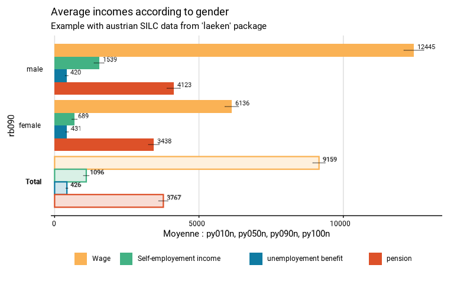

many_val_group
many_val_group.Rdmany_val_group
Usage
many_val_group(
data,
group,
list_vars,
type,
list_vars_lab = NULL,
facet_var = NULL,
filter_exp = NULL,
...,
na.rm.group = T,
prop_method = "beta",
position = "dodge",
show_ci = T,
show_n = FALSE,
show_value = TRUE,
show_lab = TRUE,
scale = NULL,
digits = 0,
unit = NULL,
dec = ",",
pretty_pal = "Egypt",
direction = 1,
dodge = 0.9,
font = "Roboto",
wrap_width_y = 25,
wrap_width_leg = 25,
legend_ncol = 4,
title = NULL,
subtitle = NULL,
xlab = NULL,
ylab = NULL,
legend_lab = NULL,
caption = NULL,
export_path = NULL
)
many_prop_group(..., type = "prop")
many_median_group(..., type = "median")
many_mean_group(..., type = "mean")Arguments
- data
A dataframe or an object from the survey package or an object from the srvyr package.
- group
A variable defining groups be compared.
- list_vars
A vector containing names of the dummy variables on which to compute the proportions
- type
"mean" to compute means by group ; "median" to compute medians by group ; "prop" to compute medians by group.
- list_vars_lab
names of the variables
- facet_var
A variable defining the faceting group.
- filter_exp
An expression that filters the data, preserving the design.
- ...
All options possible in as_survey_design in srvyr package.
- na.rm.group
TRUE if you want to remove observations with NA on the group variable or NA on the facet variable. FALSE if you want to create a group with the NA value for the group variable and a facet with the NA value for the facet variable. NA in the variables included in prop_exp are not affected in this argument. All the observation with a NA in the variables included in prop_exp are excluded.
- prop_method
Type of proportion method to use. See svyciprop in survey package for details. Default is the beta method.
- position
Position adjustment for geom_bar
- show_ci
TRUE if you want to show the error bars on the graphic. FALSE if you do not want to show the error bars.
- show_n
TRUE if you want to show on the graphic the number of individuals in the sample in each group. FALSE if you do not want to show this number. Default is FALSE.
- show_value
TRUE if you want to show the proportion in each group on the graphic. FALSE if you do not want to show the proportion.
- show_lab
TRUE if you want to show axes, titles and caption labels. FALSE if you do not want to show any label on axes and titles. Default is TRUE.
- scale
Denominator of the proportion. Default is 100 to interprets numbers as percentages.
- digits
Numbers of digits showed on the values labels on the graphic. Default is 0.
- unit
Unit showed in the graphic. Default is percent.
- dec
Decimal mark shown on the graphic. Default is ","
- pretty_pal
Color palette used on the graphic. The palettes from the packages MetBrewer, MoMAColors and PrettyCols are available.
- direction
Direction of the palette color. Default is 1. The opposite direction is -1.
- dodge
Width of the bar, between 0 and 1.
- font
Font used in the graphic. Available fonts, included in the package itself, are "Roboto", "Montserrat" and "Gotham Narrow". Default is "Roboto".
- wrap_width_y
Number of characters before before going to the line. Applies to the labels of the groups. Default is 25.
- wrap_width_leg
Number of characters before before going to the line. Applies to the labels of the legend. Default is 25.
- legend_ncol
Number maximum of colomn in the legend. Default is 4.
- title
Title of the graphic.
- subtitle
Subtitle of the graphic.
- xlab
X label on the graphic. As coord_flip() is used in the graphic, xlab refers to the x label on the graphic, after the coord_flip(), and not to the x variable in the data.
- ylab
Y label on the graphic. As coord_flip() is used in the graphic, xlab refers to the x label on the graphic, after the coord_flip(), and not to the x variable in the data.
- legend_lab
Legend (fill) label on the graphic.
- caption
Caption of the graphic.
- export_path
Path to export the results in an xlsx file. The file includes two sheets : the table and the graphic.
Examples
# Loading of data
data(eusilc, package = "laeken")
# Recoding variables
eusilc$worker <- 0
eusilc$worker[eusilc$pl030 == "1"]<-1
eusilc$worker[eusilc$pl030 == "2"]<-1
eusilc$austrian<-0
eusilc$austrian[eusilc$pb220a == "AT"]<-1
# Computation, taking sample design into account
eusilc_many_mean_group <- many_mean_group(
eusilc,
group = rb090,
list_vars = c(py010n,py050n,py090n,py100n),
list_vars_lab = c("Wage","Self-employement income","unemployement benefit","pension"),
strata = db040,
ids = db030,
weight = rb050,
title = "Average incomes according to gender",
subtitle = "Example with austrian SILC data from 'laeken' package"
)
#> Variable(s) entrées : py010n, py050n, py090n, py100n
#> Input: data.frame
#> Sampling design -> ids: db030, strata: db040, weights: rb050
#> 2720 lignes supprimées avec valeur(s) manquante(s) pour le(s) variable(s) entrées
eusilc_many_mean_group$graph

eusilc_many_mean_group$tab
#> # A tibble: 8 × 9
#> rb090 list_col mean mean_low mean_upp n_sample n_weighted n_weighted_low
#> <fct> <fct> <dbl> <dbl> <dbl> <int> <dbl> <dbl>
#> 1 male Wage 12445. 12102. 12787. 5844 3237897. 3178503.
#> 2 female Wage 6136. 5902. 6370. 6263 3519368. 3470221.
#> 3 male Self-emplo… 1539. 1369. 1710. 5844 3237897. 3178503.
#> 4 female Self-emplo… 689. 600. 778. 6263 3519368. 3470221.
#> 5 male unemployem… 420. 371. 469. 5844 3237897. 3178503.
#> 6 female unemployem… 431. 387. 475. 6263 3519368. 3470221.
#> 7 male pension 4123. 3894. 4353. 5844 3237897. 3178503.
#> 8 female pension 3438. 3254. 3623. 6263 3519368. 3470221.
#> # ℹ 1 more variable: n_weighted_upp <dbl>